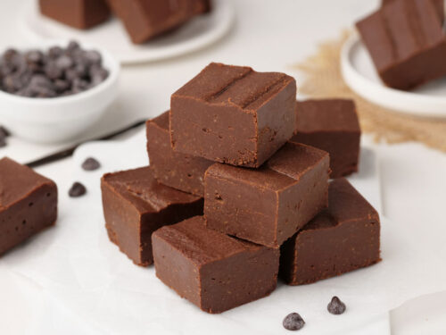

Fudge

Description
I double the recipe and put in a glass baking dish (9x13 inches). Nice for holidays... Keep it for a secret and family and friends will think you worked forever on it... You can also use peanut butter chips and make peanut butter fudge.
Ingredients
- 3 cups semisweet chocolate chips
- 1 14 oz. can sweetened condensed milk
- 1/4 cup butter
- 1 cup chopped walnuts (optional)
Steps
- Place chocolate chips, sweetened condensed milk, and butter or margarine in large microwaveable bowl. Zap in microwave on medium until chips are melted, about 3-5 minute, stirring once or twice during cooking. Stir in nuts, if desired.
- Pour into well-greased 8x8-inch glass baking dish. Refrigerate until set.